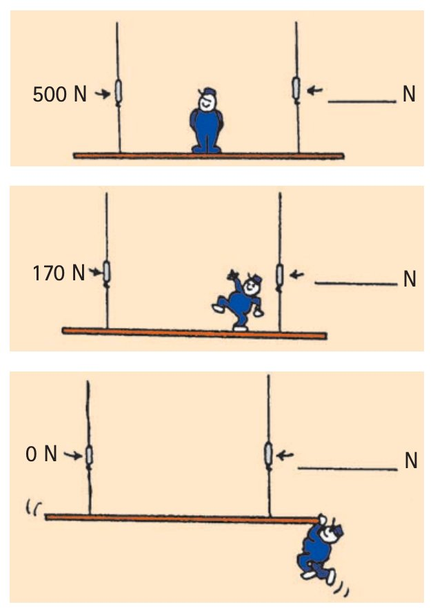

1. Define mechanical equilibrium in terms of net force.
2. What is the difference between static equilibrium and dynamic equilibrium?
3. A book is at rest on a table. Can forces still act on it? Answer yes or no and name the two main vertical forces.
4. A car moves in a straight line at constant speed. Is this motion compatible with equilibrium?
5. Write the equilibrium rule using symbols.
6. A hanging sign weighs 140 N and is supported by one vertical cable while at rest. Determine the cable tension required for equilibrium.
7. A cart is held motionless by a 46-N pull to the right. What leftward force is required for horizontal equilibrium? State the net horizontal force.
8. Use the scaffold image. Explain why the two support forces do not have to be equal even though the scaffold can remain in equilibrium. Describe how the support distribution changes as the person moves.

9. A 500-N load is supported by two vertical ropes. One rope pulls upward with 185 N. Determine the upward force from the other rope for equilibrium.
10. A box moves right at constant speed while a 70-N push acts right. Determine the required leftward resistance and explain why zero net force can coexist with motion.
11. A student says, “If something is moving, it cannot be in equilibrium.” Critique the statement using static and dynamic equilibrium and Newton’s First Law.
12. A bathroom scale reads 640 N while a person stands still. Explain what the scale reading represents, what the person’s weight must be in this simple situation, and why the net force is still zero.
13. Which condition defines mechanical equilibrium?
14. Which example is static equilibrium?
15. Why can a book at rest still have forces acting?
16. A hanging lamp is motionless. Which statement is best?
17. Which situation is dynamic equilibrium?
18. A cart moves straight at steady speed. What must be true about its net force?
19. For vertical equilibrium, 220 N acts downward and one upward force acts. What must the upward force be?
20. A 600-N load is held by two vertical supports. One provides 250 N upward. What must the other provide?